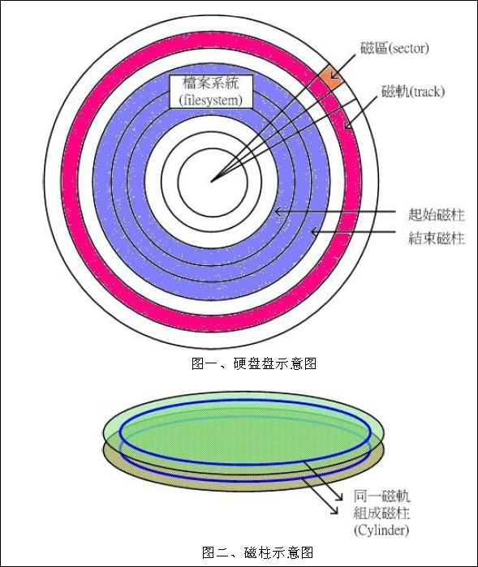
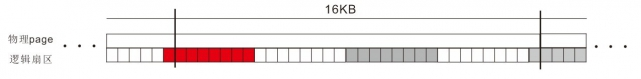

本文作者是一位开源理念的坚定支持者，所以本文虽然不是软件，但是遵照开源的精神发布。
本文作者十分愿意与他人分享劳动成果，如果你对我的其他翻译作品或者技术文章有兴趣，可以在如下位置查看现有的作品集：
由于作者水平有限，因此不能保证作品内容准确无误。如果你发现了作品中的错误(哪怕是错别字也好)，请来信指出，任何提高作品质量的建议我都将虚心接纳。
因为SSD有着诸多与传统机械式硬盘不同的特点，而且这些特点导致了SSD在实际使用中的性能和寿命与其使用方法紧密相关。所以并不是说买来一块非常牛X的SSD就万事大吉了。另一方面，SSD的性能并不像机械式硬盘那样比较稳定(浮动范围小)，而是呈现出一种离散的特点(浮动范围大)，最佳状态与最差状态相差甚远(上百倍)，所以如何避免最差状态比如何发挥最佳状态更重要。
如果要对一块SSD进行分区，然后再使用，就会遇到这个问题。当然，也可以不对它进行分区以避免这个问题。对于Linux来说，不分区直接使用就是直接格式化 /dev/sdx 设备(比如：mkfs.xfs /dev/sdx)，然后再 mount /dev/sdx /mnt/point
考虑到使用习惯、预留空间(见下文)的问题，以及安装引导程序(如：grub)的要求，不做分区直接使用并不是个好主意。幸运的是，分区对齐问题是可以得到完美解决的。
如果SSD上的分区分割点处于未对齐SSD block size倍数的状态，SSD效能就不能完全发挥，系统可能会有卡顿的感觉，另外，未对齐的分割点还会造成SSD在连续写入小文件时，增加无谓的SSD额外写入/擦除动作从而大幅影响SSD的寿命，而这偏偏是SSD使用中最该避免的。
分区不对齐，对4KB随机写入的影响最大，实际测试表明，在其他因素相同的情况下，分区不对其导致的性能差距最大可达10倍。
在了解事情的来龙去脉之前，先得把传统硬盘的几个概念拿出来复习一下。
CHS(Cylinder-head-sector)是最早用于访问硬盘的寻址方式。虽然CHS的值现在早已不再与实际的物理值相对应(只是个逻辑值)，但是依然有许多磁盘管理程序(比如fdisk/cfdisk)使用CHS的方式来理解硬盘。

硬盘一般是由一片或几片圆形薄膜叠加而成。每个圆形薄膜都有两个"面"(Side)，这两个面都是用来存储数据的。盘面由上而下从"0"开始编号，依次称为0面、1面、2面……由于每个面都专有一个读写磁头，也常用0头(head)、1头……称之。硬盘面数(或头数)，少的只有2面，多的可达数十面。
按照CHS规范，head使用8bit编址，因此最多可以有256个磁头(0-255)。但是由于某些古董程序只能最大支持到255个磁头，出于兼容性考虑，绝大多数场合的默认值依然是255个磁头。
读写硬盘时，磁头不动，磁盘是旋转的，则连续写入的数据是排列在一个圆周上的。我们称这样的圆周为一个磁道(Track)。
磁头不动，就是在一个磁道上读写；磁头移动，就会在不同磁道上读写。
按照CHS寻址规范，由外向内从"0"开始顺序编号。不过其编址时使用的位宽并不是一个定值(取决于不同的规范)，我们姑且可以认为其足够大。
各面上磁道号相同的磁道合起来，称为一个柱面(cylinder)。也就是距轴的距离相同的一组track所形成的圆筒。
按照CHS寻址规范，cylinder和track一样，也由外向内从"0"开始顺序编号。并且其编址位宽足够大。
cylinder也是磁盘分区时的最小单位，分区是按磁道和柱面连续分布的(即每个分区，都是粗细连续的一组筒子)。
下面是一个fdisk的输出，主意最后一行：
# fdisk /dev/sda Command (m for help): n Command action e extended p primary partition (1-4) p Partition number (1-4): 1 First cylinder (1-524, default 1):
一个track上可以容纳"较多"的数据，而主机读写时往往并不需要一次读写那么多，于是，磁道又被按512或4096字节划分成若干段，每段称为一个扇区(Sector)。一个扇区的大小是固定的512或4096字节。
计算机对硬盘的读写，是以扇区为最小单位。即使只读某一个字节，也必须一次把这个字节所在的扇区中的512或4096字节全部读入内存。
按照CHS寻址规范，Sector的编号始终是从"1"开始的(不是"0")。由于使用6bit编址，所以其最大值是63，也就是说既不存在 sector 0 也不存在 sector 64 。目前所有机械式硬盘在逻辑CHS模式中都使用63这个最大值。
Block是文件系统的最小存取空间。一个 Block 最多仅能容纳一个文件（即不存在多个文件同一个block的情况）。如果一个文件比block小，他也会占用一个block，因而block中空余的空间会浪费掉。而一个大文件，可以占多个甚至数十个成百上千万的block。
# df / (/dev/dsk/c0t3d0s0 ): 573548 blocks 226057 files /proc (/proc ): 0 blocks 3854 files /var (/dev/dsk/c0t3d0s1 ): 1897206 blocks 250028 files /var/run (swap ): 611424 blocks 26300 files /tmp (swap ): 611424 blocks 26300 files
sector 和block的差别
应该根据自己系统应用的特点，合理规划block size：若block太大，则存取小文件时，有空间浪费的问题；若block太小，则硬盘的 Block 数目会大增，而造成 inode 在指向 block 时候的一些搜寻时间的增加，又会造成大文件读写方面的效率较差。
先看一个500G的硬盘在 fdisk -l 时显示的信息：
# fdisk -l /dev/sda Disk /dev/sda: 500.1 GB, 500107862016 bytes 255 heads, 63 sectors/track, 60801 cylinders, total 976773168 sectors Units = sectors of 1 * 512 = 512 bytes Sector size (logical/physical): 512 bytes / 512 bytes I/O size (minimum/optimal): 512 bytes / 512 bytes Disk identifier: 0x00000000 Device Boot Start End Blocks Id System /dev/sda1 63 8000369 4000153+ 83 Linux /dev/sda2 8000370 95891984 43945807+ 83 Linux /dev/sda3 95891985 427923404 166015710 83 Linux /dev/sda4 427923405 976768064 274422330 83 Linux
可以看出，磁盘总容量=磁头数*每磁道扇区数*柱面数*扇区大小。当然，这里的磁头数、扇区数、柱面数并不是物理真实值，而是逻辑值。甚至对于4KB扇区的硬盘，扇区大小也可能是逻辑值。
上面说的CHS寻址方式其实在实践中早就被丢进垃圾箱了。目前在实践中真正使用的是48位LBA(Logical Block Address)寻址方式。LBA是非常单纯的一种寻址模式：从0开始编号来定位区块(扇区)，第一区块LBA=0，第二区块LBA=1，依此类推。以每扇区512字节计算，容量上限可达128PB。LBA寻址模式完全屏蔽了硬盘的物理结构，而将其简单的抽象成一维条带，非常便于操作系统的理解。
了解了上面的知识之后，现在知道了机械硬盘从很早前开始，扇区大小就被定义为512字节，而最新的"先进格式"机械盘终于把物理扇区提高到4KB(4096字节)。机械式硬盘的最小操作单位是扇区，也就是说，无论读取还是写入1个字节、10个字节、500字节，实际的操作都是512字节。当然，对于4KB扇区的机械式硬盘来说，所有读写操作都会被向上取整到4KB的整数倍。
但SSD的操作方式与此不同。SSD不像HDD那样只有读/写两种操作而且还是统一的，SSD有三种操作：读/写/擦除。闪存的读写单位是4KB或8KB大小的页，而且闪存的擦除(又叫编程)操作是按照128或256页大小的块来操作的。
传统上，LBA模式的HDD第一个分区的起始点从63逻辑扇区(63x512B=31.5KB)开始，对于扇区大小为512B的HDD来说，这当然没什么问题。但对于SSD和新式HDD来说，就会造成用户的第一个数据的前4KB会存放在系统"逻辑扇区"的31.5KB~35.5KB间，这样持续下去会造成后面所有的数据都会卡在2个物理扇区(页)容量之间，我们知道扇区(页)为磁盘写入的最小单位，如果卡在2个扇区(页)之间，写入的时候就需要进行读-改写操作(对SSD来说读-擦-写)，造成性能的下降。

简单的说，应该放在SSD最大操作单位"块"，也就是block size整数倍的位置。
对于单通道的闪存设备，这很简单，也很好理解。但事实上，几乎所有的SSD都不是单通道的，这时候应该空出多少呢？
多通道的闪存设备也是把数据拆成一个一个的块，然后分别对每个通道进行读写操作，这个块的大小和所使用的闪存芯片的块的大小是一样的。如果多通道SSD会把数据再进一步拆分然后才写到各个通道的话，情况就会变得复杂了。不过目前的SSD主控似乎还没有这么聪明，目前多通道写入时最小的数据单位依然是闪存块的大小。因此，在目前的情况下，我们完全可以不考虑设备是几通道的，直接把分区分割点设在block size整数倍的位置即可。也许未来需要把分割点设置在"通道数*block-size"整数倍的位置？
在给出最终解决方案之前，先来了解一下fdisk工具：
# fdisk -h Usage: fdisk [options] <disk> change partition table fdisk [options] -l <disk> list partition table(s) fdisk -s <partition> give partition size(s) in blocks Options: -b <size> sector size (512, 1024, 2048 or 4096) -c[=<mode>] compatible mode: 'dos' or 'nondos' (default) -h print this help text -u[=<unit>] display units: 'cylinders' or 'sectors' (default) -v print program version -C <number> specify the number of cylinders -H <number> specify the number of heads -S <number> specify the number of sectors per track
我们通常并不使用任何选项，但是为了强制分割点的位置对齐，就必须强制指定如下三个参数：
这三个参数值的乘积就是一个逻辑柱面的总大小，也就是最小分割单位了。
经过前面的讲解，现在知道，只要把"块"作为SSD的最小单位来划分磁盘就能完美解决分区对齐的问题。
现在假定我们拿到一块SSD的参数是这样的：每个页的大小是8KB、每256个页组成一个块，那么也就是说我们必须以256*8KB=2097152B=2048KB=2MB为最小单位对其进行分区。也就是说，我们可以通过强制指定fdisk的命令行参数，使每个柱面(cylinder)的大小为2MB即可达到目的(假定每扇区512字节)：
fdisk -u=cylinders -H 128 -S 32 /dev/sdx
如果觉得每个柱面(cylinder)的大小为2MB还是不够大，那么可以加大到4MB(假定每扇区512字节)：
fdisk -u=cylinders -H 256 -S 32 /dev/sdx
此外，还需要注意一个细节，那就是第一个分区的起点不能从默认的第一个柱面开始，而是要从第2个柱面开始，否则第一个分区有可能依然不会对齐。如下图所示：
Command (m for help): n
Command action
e extended
p primary partition (1-4)
p
Partition number (1-4, default 1):
Using default value 1
First cylinder (1-800, default 1): 2
Last cylinder, +cylinders or +size{K,M,G} (2-800, default 800): 500
注意 First cylinder 那一行，那里的默认值是1，但是不能用它，要手动修改为2。
导致这个问题的原因，据Google说是fdisk会对从 cylinder 1 开始的扇区特殊对待，自作主张的向前平移分区起点。不过，既然新版本的fdisk已经修正了这个bug，我们就不必再去考古了。
如何检查分区是否确实已经对齐呢？方法是使用"fdisk -u=sectors -l /dev/sdx"查看。例如：
# fdisk -u=sectors -l /dev/sda Disk /dev/sda: 671 MB, 671088640 bytes 128 heads, 32 sectors/track, 320 cylinders, total 1310720 sectors Units = sectors of 1 * 512 = 512 bytes Sector size (logical/physical): 512 bytes / 512 bytes I/O size (minimum/optimal): 512 bytes / 512 bytes Disk identifier: 0x7bf5a16d Device Boot Start End Blocks Id System /dev/sda1 63 40959 20448+ 83 Linux /dev/sda2 40960 79871 19456 83 Linux /dev/sda3 81920 163839 40960 83 Linux
首先看 Sector size 的大小，有logical/physical两个值，都是512字节。
sda1分区的Start=63，那么就表示sda1分区的起始扇区头距离LBA0的距离是63*512B=31.5KB，显然是未对齐的。
sda2分区的Start=40960，表示sda2分区的起始扇区头距离LBA0的距离是40960*512B=20MB=5*2*2MB，显然既在2MB大小的块边缘对齐，也在4MB大小的块边缘对齐；再看sda2分区的End=79871，表示sda2分区的终止扇区尾距离LBA0的距离是(79871+1)*512B=39MB，显然只能在1MB大小的块边缘对齐，但是不能在2MB/4MB块的边缘对齐。
sda3分区的Start=81920，表示sda3分区的起始扇区头距离LBA0的距离是81920*512B=40MB=5*4*2MB，显然既在2MB大小的块边缘对齐，也在4MB大小的块边缘对齐，甚至对于8MB大小的块也是对齐的；再看sda3分区的End=163839，表示sda3分区的终止扇区尾距离LBA0的距离是(163839+1)*512B=80MB=5*2*2*2*2MB，显然可以在2MB/4MB/8MB/16MB块的边缘对齐。
可见sda3是对齐最完美的分区，而sda1则是最糟糕的。
现在SSD已经被完美的分区了，接下来就是创建文件系统了，那么哪个文件系统才是最适合SSD的呢？因为Linux系统有如此多的文件系统：etx2/ext3/ext4/reiser3/reiser4/JFS/XFS/Btrfs/NILFS2……在HDD的时代，选择合适的文件系统就一直是个令人头痛的问题。直到目前为止，不得不说，没有任何一个文件系统和SSD是绝配。